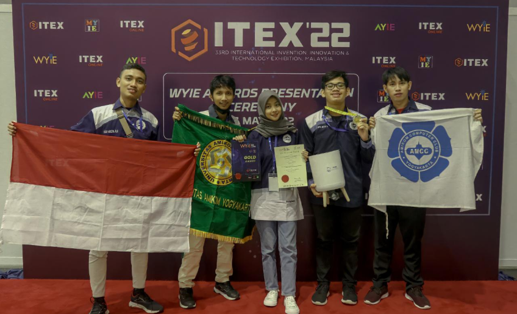

Creative Economy Park
D3 TEKNIK INFORMATIKA AMIKOM
(University based on creative economy and entrepreneurship)

 Tim Fishee-Amikom Computer Club meraih Gold Medal (Agriculture) dalam World Young Inventors Exhibition (WYIE) 2022 Malaysia. WYIE merupakan satu dari tiga pameran yang digelar serentak The International Invention, Innovation and Technology Exhibition (ITEX) 2022.
Selain WYIE, ada pula Asia Young Inventors Exhibition (AYIE) dan Malaysia Young Inventors Exhibition (MYIE). Tiga pameran digelar hybrid, untuk luring di Kuala Lumpur Convention Centre dan bisa disaksikan secara daring pada 26-27 Mei 2022.
ITEX adalah pameran tahunan yang diadakan oleh Malaysian Invention and Design Society (MINDS) untuk menampilkan berbagai penemuan, teknologi dan produk baru. Ditujukan kepada inovator-inovator muda di wilayah Asia dan sekitarnya.
Agenda ini ditarget mengamankan prospek investasi, manufaktur, dan komersialisasi dari produk-produk tersebut. Fishee merupakan inovasi yang memberikan kemudahan bagi para pembudidaya ikan dalam mengoptimalkan kualitas media dan air kolam.
Termasuk, pemberian pakan otomatis dengan satu klik yang diinstruksikan melalui ponsel pintar via Telegram. Inovasi ini juga meraih Gold Medal dalam XXV Moscow International Salon of Inventions and Innovations Technologies (Archimedes).
Inovasi yang mereka kembangkan ini diharap dapat ditingkatkankan menjadi produk massal. Lalu, didistribusi dengan baik agar bisa menjadi solusi untuk membantu petani ikan dalam memonitor pertumbuhan ikan dan jumlah ikan yang akan dipanen.
Pembimbing Tim Fishee, Prof Ema Utami, mengaku bangga atas prestasi mahasiswa tersebut. Ia merasa sangat senang dengan tim peneliti yang memiliki semangat belajar tinggi memanfaatkan berbagai teknologi sebagai sarana pendukungnya.
"Tim pengembang Fishee ini telah menunjukkan kalau mereka mampu berperan masing-masing sesuai bidangnya dalam sebuah barisan yang kokoh, sehingga mampu menghasilkan karya berbasis teknologi yang berguna di masyarakat," kata Ema.
Apresiasi dari penghargaan itu salah satunya dengan adanya beasiswa. Bisa berupa SPP ataupun yang lainnya, bagi mereka yang berprestasi baik lokal, nasional apalagi internasional sesuai dengan syarat-syarat dan ketentuan.
Wakil Rektor III Amikom Bidang Kemahasiswaan dan Alumni, Dr Achmad Fauzy menyampaikan, pencapaian ini wujud kerjasama dan kolaborasi luar biasa dosen dan mahasiswa. Di mana, masing-masing mengambil peran sesuai kapasitas baik ide, gagasan, inovasi dan kreatifitas.
"Semoga torehan prestasi ini akan memacu dan memicu, menginspirasi mahasiswa dan dosen lain melakukan kerjasama riset yang bisa memberikan manfaat tidak hanya untuk dirinya atau almamaternya namun juga bisa bermanfaat untuk masyarakat," ujar Fauzy.
Fishee merupakan hasil kolaborasi penelitian mahasiswa multi prodi, S2 Teknik Informatika, S1 Sistem Informasi dan S1 Informatika. Terdiri dari Dwi Rahmawati, Yogi Yulianto, Pebri Antara, Dicky Arisya Rizaldi Ramadandi, dan Taufiq Alfianto.
Proses pengembangan prototipe produk Fishee berawal dari perencanaan produk itu pada Oktober 2021. Setelah konsultasi ke dosen pembimbing, prototipe dilombakan di berbagai kompetisi dan mendapat sambutan sangat baik juri dan calon investor.
Meski begitu, prototipe yang mereka hadirkan ini masih harus terus dikembangkan sampai saat ini. Sehingga, dapat benar-benar membantu pembudidaya dengan beragam jenis ikan dalam memonitor pertumbuhan ikan dan jumlah ikan yang akan dipanen.